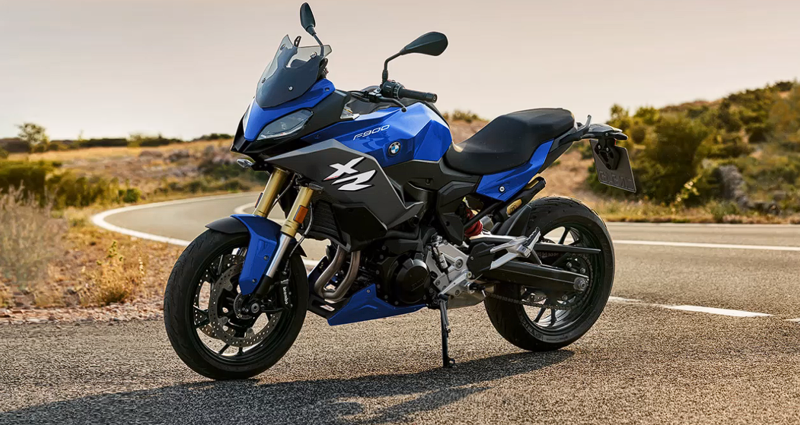

|  | ||||
| Yakıt Tipi | Güç | 0-100 | ||
| Benzin | 136 bg | h: 3.3 sn | ||
YENİ BMW R 1250 RS HIZ ŞERİDİNDE SPORTİF BİR GEZİNTİ

Her durumda daha fazla güç Boxer motor kendini kanıtlamış BMW ShiftCam teknolojisi sayesinde iki farklı kam mili profiline sahiptir. Değişken kam mili kontrolü sayesinde sürüş üstün akıcı çalışma özelliği, yüksek verimlilik veya gerçek anlamda güçlü bir hızlanma için ihtiyaca bağlı tork geliştirme özelliğiyle etkileyicidir.Maksimum 143 Nm’ye tork artışı, hız şeridinde yapılan atakların yanı sıra virajlardan güçlü bir şekilde hızlanarak çıkarken, her devir aralığında hissedilebilir.
Ön tasarımdan arka tasarıma kadar sportif İkonik gündüz farları ve yeni tasarlanan LED yanıp sönen sinyal lambalarını içeren çarpıcı ön kısımdan yüksek ön cama ve eksiksiz kaplama paneline ve kısa, sportif, dar tekli seleye kadar Yeni R 1250 RS saf bir sports touring motosiklettir. Kendinden emin ve güvenli yapıda motosiklet performans odaklı bir duruşa ve hükmeden bir görünüme sahiptir. Aynı zamana motosikletin çizgilerinin söz verdiği gibi konforlu ve virajlara tutkundur. Ve yalnızca sizin istediğiniz gibi performans sağlar.
| İLETİŞİM & DESTEK | HIZLI ERİŞİM |
| İletişim | Model Listesi |
| Geri Dönüşüm | Kataloglar |
| Gönüllü Geri Çağırma | Ayın Özel Teklifleri |